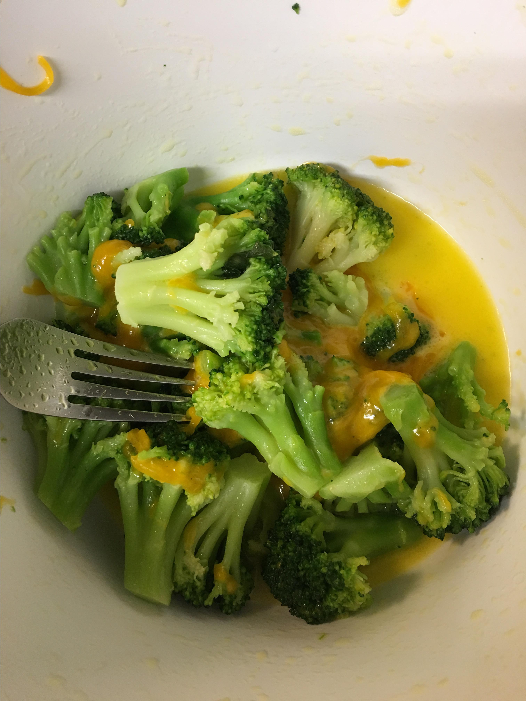

Quick and Simple Broccoli and Cheese

Description
This recipe is great for just-getting-started-cooks.
Ingredients
- 1 (10 ounce) package frozen broccoli florets, thawed
- 3 tablespoons butter, melted
- salt and pepper to taste
- ½ cup shredded Cheddar cheese
Steps
-
Place broccoli in a steamer over 1 inch of boiling water, and cover.
Cook until tender but still firm, about 2 to 6 minutes. Drain and
transfer to a microwave safe casserole dish.
-
Pour melted butter over broccoli (use more or less, to taste) and season
with salt and pepper. Sprinkle cheese over the top and microwave, on
high, for 1 minute, or until cheese is melted.